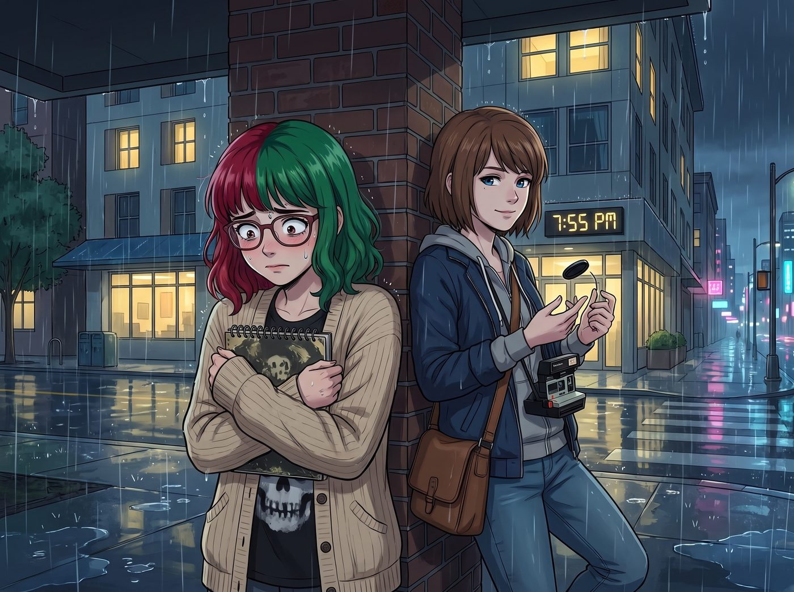
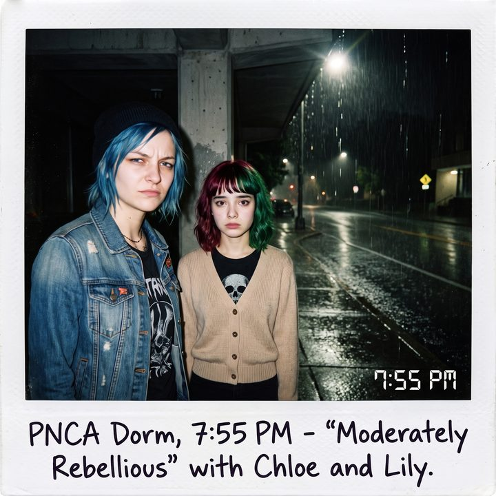

法規終結者（倒敘）


晚上七點五十五分，波特蘭的夜空正飄著細雨。
Lily站在PNCA新生宿舍樓下的避雨棚裡，緊張得像是一隻即將被送上解剖台的小白鼠。她嚴格按照適度叛逆時間表的著裝要求，穿了一件印著模糊骷髏頭圖案的黑色T恤，但在外面死死地裹著一件米色針織衫，甚至把扣子扣到了最上面一顆。
站在她旁邊的Max則一臉輕鬆，脖子上掛著寶麗來相機，手裡把玩著鏡頭蓋，等著看好戲。
一、違規停放的司機
「吱——————嘎！」
一陣極其刺耳、彷彿剎車片已經磨到只剩鐵皮的尖銳摩擦聲劃破了校園的寧靜。
一輛滿是鐵鏽、右側車燈還用透明膠帶粗暴纏著的老舊福特皮卡，以一個絕對違反交通法規的甩尾姿勢，粗暴地切入並霸佔了宿舍樓門前畫著黃線的消防車專用通道。
車門被一腳踹開。Chloe穿著那件標誌性的破爛皮夾克，一頭叛逆的藍髮在波特蘭的路燈下顯得格格不入。她嘴裡叼著一根沒點燃的香菸，單手撐著車門，用一種審視獵物的眼神打量著站在Max身邊的Lily。
「這就是妳說的那個……需要按Excel表格來吃披薩的小學妹？」Chloe挑了挑眉，語氣裡帶著毫不掩飾的狂野與戲謔，「Max，妳是從哪個修道院的檔案室裡把她挖出來的？她看起來像是那種會在過馬路時給紅綠燈鞠躬的類型。」
二、機關槍般的法規背誦
十八歲的Lily倒抽了一口涼氣。她的視線沒有停留在Chloe藍色的頭髮或皮夾克上，而是猶如一台雷達，瞬間掃描了這輛皮卡和Chloe的全身，並在大腦中調出了波特蘭市的市政法規。
「晚……晚上好。」Lily緊張地推了推圓框眼鏡，聲音因為恐懼而有些發抖，但嘴裡吐出的話卻像機關槍一樣精準，「打擾一下，這位女士。您目前停靠的區域是波特蘭消防局核定的紅區，違規停放將面臨兩百五十美元的罰款並可能被強制拖吊。此外，您車輛的排氣管剛才噴出的黑煙，目測其懸浮微粒濃度已經嚴重違反了州環境品質部的排放標準。」
Lily越說越快，雙手死死地揪著針織衫的下擺：「還有……校園內屬於無菸區，您嘴裡的香菸雖然沒有點燃，但已經構成了潛在的火災隱患與不良行為暗示……」
Chloe呆住了。她嘴裡的香菸啪地一聲掉在了地上。
在阿卡迪亞灣的街頭混了這麼多年，Chloe見過拿著棒球棍要揍她的毒販，見過歇斯底里的校長，但她這輩子，從來沒有見過一個在面對挑釁時，會直接給她背誦州車輛管理法和校園消防條例的生物。
Chloe轉過頭，震驚地看著Max：「Max……妳這學妹是不是某種政府開發的半生化機器人？她剛才是不是對我進行了一次口頭的交通違規傳票核發？」
三、首次碰撞的畫面
「喀嚓。」Max終於等到了她期待已久的畫面。閃光燈亮起，寶麗來相機精準地捕捉到了Chloe懷疑人生的表情，以及Lily緊繃得像一根隨時會斷掉的琴弦般的站姿。
「放輕鬆，Chloe，她只是在自我防禦。」Max笑得肩膀都在抖，走上前把Lily往前推了推，「Lily，這是Chloe，我的死黨兼今晚的司機。Chloe，這是Lily，我的……嗯，首席情緒穩定官。」
「見鬼的情緒穩定官。」Chloe撿起地上的菸頭彈進垃圾桶，拉開了皮卡那扇發出慘叫的車門，「上車吧，法規終結者。帶妳去見識一下沒有Excel表格的真實世界。」
四、缺乏安全氣囊的疑慮
Lily猶豫地走到車門邊。她往車廂裡看了一眼，眉頭立刻皺了起來。儀表板上散落著空啤酒罐、幾個不明來歷的吉他撥片，還有一股淡淡的機油混合著舊皮革的味道。
「請問……」Lily小心翼翼地問道，「這輛車最近一次通過國家公路交通安全管理局的安全碰撞測試是什麼時候？我沒有在副駕駛座看到合規的安全氣囊標識。」
Chloe深吸了一口氣，強忍著把這個書呆子直接扔進後車斗的衝動。「聽著，實習生。」Chloe雙手按在車門上，湊近Lily，露出一個極具壓迫感的街頭式微笑，「這輛車的安全測試，就是本大爺還活著。妳現在有兩個選擇：要麼乖乖坐進來，繫上那根可能已經卡死的安全帶；要麼留在妳那符合消防標準的溫室裡，錯過妳人生中第一塊帶有額外油脂的辣香腸披薩。」
Lily嚥了一口唾沫。她看了一眼手腕上那塊精確到秒的電子錶。現在是七點五十八分，距離適度叛逆時間表上規定的垃圾食品攝取時間只剩兩分鐘了。如果現在退縮，她的整個週末計畫都會面臨嚴重的進度延誤。
五、妥協的中間座位
「我……我坐中間。」Lily妥協了。她像一隻面對惡犬的小貓，小心翼翼地爬進了皮卡擁擠的前排長椅，僵硬地坐在了駕駛座的Chloe和副駕駛的Max中間。
她找到那根佈滿灰塵的安全帶，用力拉出來，只聽卡塔一聲，她把自己死死地綁在了座位上，雙手緊緊抱著胸前那個看不見的防禦刺蝟。
Chloe看著身邊這個僵硬得像塊木板的女孩，嘴角勾起一抹狂野的笑容。她猛地扭動鑰匙，一腳將油門踩到底。
「轟！！！」
老舊的引擎發出了一聲猶如野獸般的咆哮。皮卡在濕滑的波特蘭街道上猛地竄了出去，巨大的推背感讓Lily發出了一聲短促的、被死死壓抑在喉嚨裡的尖叫。
「Max！」Chloe一邊單手打方向盤，一邊在引擎的轟鳴聲中大笑，「妳到底從哪找來這麼個活寶？她連尖叫都要控制分貝嗎？！」
Max坐在副駕駛座上，手裡拿著剛吐出來的寶麗來相紙，感受著車窗外吹進來的冷風，笑得無比開心。「習慣就好，Chloe。她只是還沒適應混亂。」
此時的Max和Chloe都不知道，坐在她們中間這個瑟瑟發抖、滿腦子都是交通法規的十八歲乖乖牌，將在四年後的暴雨和封城中，進化成一個能用合規文件把整個官僚系統按在地上摩擦的行政黑魔法師。
而這場充滿汽油味和驚嚇的波特蘭披薩之旅，就是魔王覺醒的第一課。